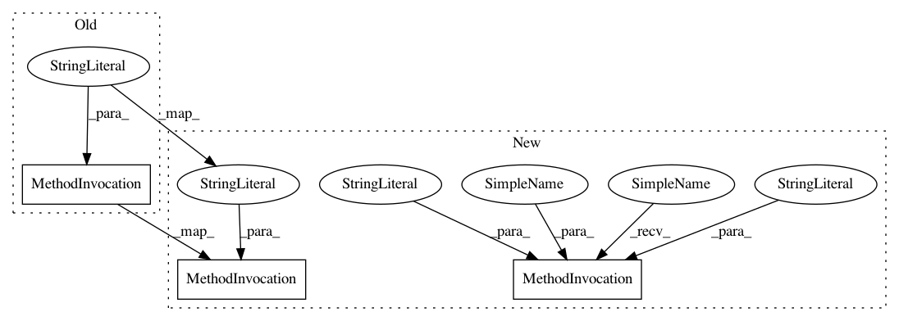

145928b26625096f10645a52545179b08e96e6c5,model/arguments.py,,parse_arguments,#,20
Before Change
default=1e-5,
type=float,
help="network regularization multiplicative")
parser.add_argument(
"--alpha",
default=1.0,
type=float,
help="inverse gamma shape")
parser.add_argument(
"--beta",
default=1.0,
type=float,
After Change
default=1e-5,
type=float,
help="network regularization multiplicative")
parser.add_argument(
"--transition_bias",
default=None,
type=float,
help="The value of p0, corresponding to Eq. (6) in the "
"paper. If the value is given, we will fix to this value. If the "
"value is None, we will estimate it from training data "
"using Eq. (13) in the paper.")
parser.add_argument(
"--crp_alpha",
default=1.0,
type=float,
help="The value of alpha for the Chinese restaurant process (CRP), "
"corresponding to Eq. (7) in the paper. In this open source "
"implementation, currently we only support using a given value "
"of crp_alpha.")
parser.add_argument(
"--sigma2",
default=None,
type=float,
help="The value of sigma squared, corresponding to Eq. (11) in the "
"paper. If the value is given, we will fix to this value. If the "
"value is None, we will estimate it from training data.")
parser.add_argument(
"--sigma_alpha",
default=1.0,
type=float,
help="The inverse gamma shape for estimating sigma2. This value is only "
"meaningful when sigma2 is not given, and estimated from data.")
parser.add_argument(
"--sigma_beta",
default=1.0,
type=float,
help="The inverse gamma scale for estimating sigma2. This value is only "
"meaningful when sigma2 is not given, and estimated from data.")
// training/testing configurations
parser.add_argument(
"--optimizer",
In pattern: SUPERPATTERN
Frequency: 1
Non-data size: 3
Instances
Project Name: google/uis-rnn
Commit Name: 145928b26625096f10645a52545179b08e96e6c5
Time: 2018-11-05
Author: quanw@google.com
File Name: model/arguments.py
Class Name:
Method Name: parse_arguments